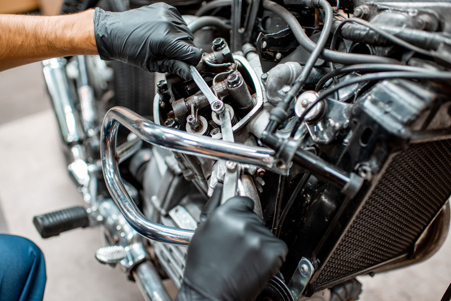

Los mejores sevicio
Servicios para tu Auto
Mantenimiento Preventivo
Un ajuste de motor es un proceso que evalúa el estado de diferentes partes del motor, como los cilindros, los pistones, el cigüeñal, las bielas, las válvulas, los balancines, los resortes, las guías, los engranajes
>precio $3000 que esperas para un mejor rendimiento
.